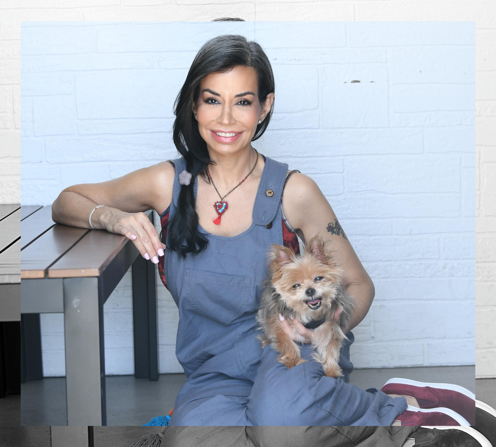

The trauma bond
Unpredictable cruelty followed by sudden warmth creates one of the strongest attachments the human brain can form. Missing them isn't proof it was love. It's proof the bond was engineered.
Narcissistic Abuse Recovery Coaching
One-to-one coaching for people rebuilding after a narcissistic partner, parent or family member. We name what actually happened to you, break the trauma bond, and bring you back to a self you recognise again.

Does any of this sound like your life?
Narcissistic abuse rarely announces itself. It arrives as confusion — the slow, quiet erosion of your certainty about what is real.
None of that is weakness or over-reaction. Those are the fingerprints of narcissistic abuse — and they respond to the right work.
Why you can't just "get over it"
Unpredictable cruelty followed by sudden warmth creates one of the strongest attachments the human brain can form. Missing them isn't proof it was love. It's proof the bond was engineered.
You hold two incompatible truths — "they hurt me" and "they're the only one who understands me." Your mind resolves the conflict the cheapest way it can: by blaming you.
Years of scanning for the next mood shift leaves your body braced long after the danger has gone. Insight alone won't switch that off — the body has to be taught safety again.
Their contempt was installed as your inner voice. Until that voice is separated out and named, every attempt at boundaries feels like cruelty on your part.
The approach
This is not traditional talk therapy and it isn't advice-giving. It's structured, practical recovery work — done together, at your pace.
Language for what happened, so the confusion finally has a shape you can work with.
Loosening the pull — whether you've left, are planning to, or are still in it.
Teaching a braced body that the threat has passed, so calm stops feeling unfamiliar.
Separating their voice from yours, and dismantling the beliefs it left behind.
Reaching the earlier wound that made the dynamic feel familiar in the first place.
Saying no, going low-contact or grey-rock — without collapsing into self-blame.
What's possible for you

About Alejandra
It began in 1992, after a three-year relationship with a malignant narcissist. The emotional devastation cracked me open — and pushed me into a lifetime of self-discovery, inner work and spiritual healing.
For decades I immersed myself in the work, not just the theory:
Today I'm a certified life coach and author, working one-to-one with people recovering from narcissistic abuse, codependency and childhood trauma.
My mission is simple: to help you transcend your wounds, reclaim your voice, and come home to yourself.
How it works
Twenty minutes. We talk about what you've been through, what you want, and whether I'm the right person to support it. No script, no pressure.
A clear roadmap built around your story — your inner-child wounds, attachment patterns and the specific dynamic you're recovering from.
We meet weekly or fortnightly. You get tools, mindset shifts, steady emotional support and deep healing work — between sessions as well as in them.
I do not accept insurance. The introductory call is complimentary.
Client stories
Working with Alejandra changed my life. For the first time, I understand myself and why I chose toxic partners. I finally feel free.
I didn't know healing could feel this safe. Alejandra's compassion helped me find my voice again.
I have struggled my whole life with feeling alone, unloved and fearful. I have gone to many counselors and therapists in my 53 years, yet I still struggled to have peace. It wasn't until I worked with Alejandra that I was able to get free from these dysfunctional childhood lies implanted in me by my family. She gives tools that cut straight to the root of the issue. She has walked the walk.
I came from a place of deep trauma, wounds, anxiety and depression. I grew up in a very broken home with alcoholic and narcissistic parents, and I was repeating patterns from my childhood programming. Alejandra helped me work through it, helped me recognise that I am enough, and completely changed my perspective on the world.
I was very codependent with my family — although I'm a 30-year-old woman, I felt and was treated like a 10-year-old girl. I had a very difficult time setting boundaries. The amount of peace I feel today is something I never imagined I could have. I don't have to feel the shame and guilt I once felt.
Questions people ask first
Not at all. Many clients start while still in the relationship. We focus on clarity, boundaries and inner strength — decisions come later, and they come from you.
No. Coaching focuses on growth, new patterns and forward movement. Therapy often focuses on processing the past. Both are valuable — coaching accelerates practical transformation. This is coaching, not mental health treatment.
Many of my clients have — and they come to me because something still feels unresolved. My approach fills in the missing emotional and spiritual pieces those routes often leave open.
That doubt is one of the most common after-effects there is. You don't need a diagnosis, proof or a label to start. You only need to know that something isn't right.
Clients often feel shifts within the first few sessions — usually in self-blame and clarity first, then in how their body responds to conflict.
I don't accept insurance. The initial 20-minute discovery call is complimentary, and we'll discuss the details of working together on that call.
Healing is not only possible — it's waiting for you. You are worthy of peace. You are worthy of healthy love. You are worthy of coming home to yourself.
I would be honoured to walk beside you.
